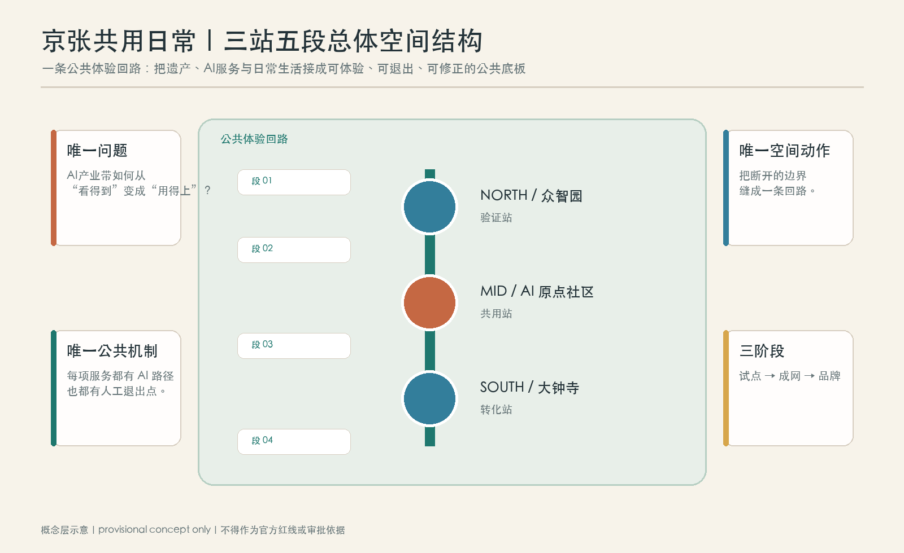
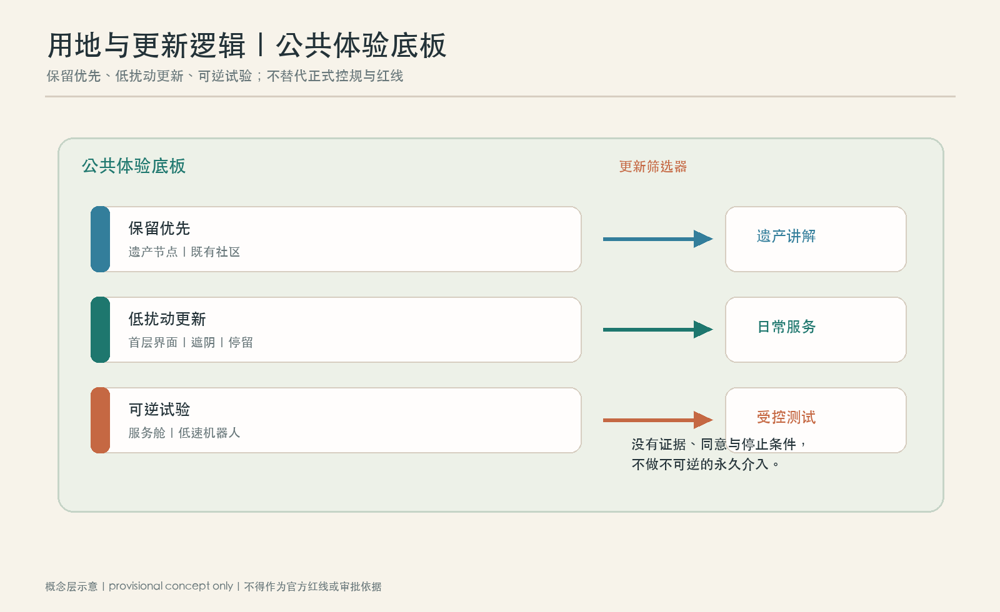
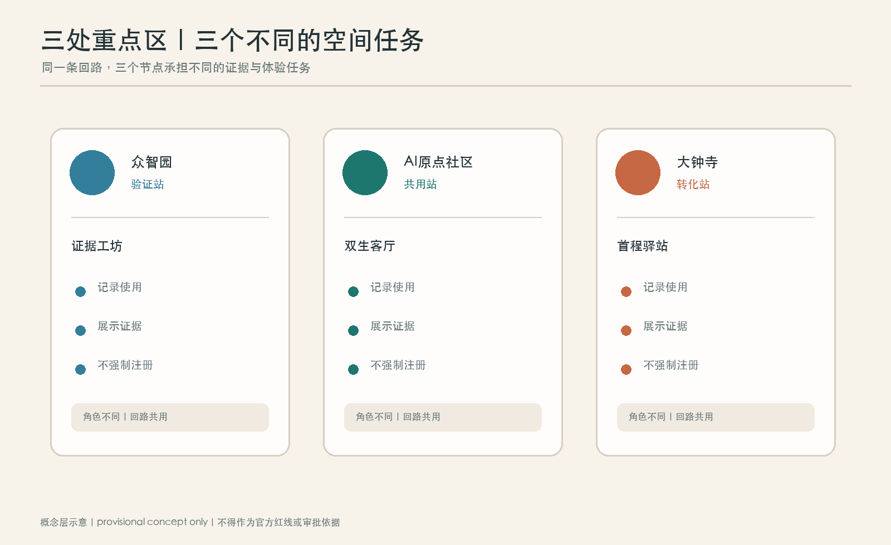
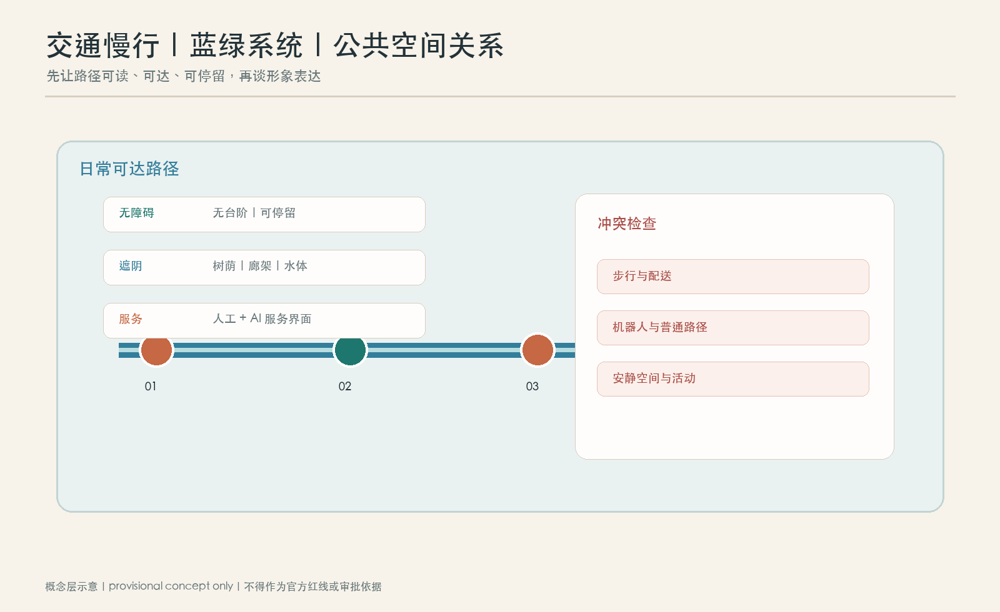
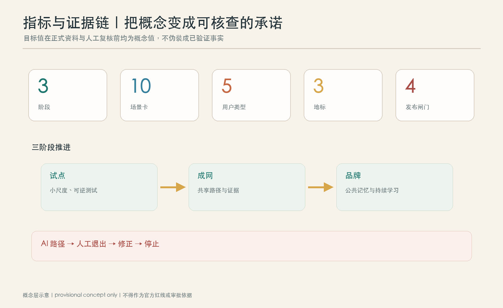

京张共用日常：从看见 AI 到共用 AI 的公共路径
以三站五段组织一条可理解、可选择、可回退、可复核的 AI 日常公共路径，用场景双生卡连接技术供给、普通人体验和公共反馈。
京张共用日常：从看见 AI 到共用 AI 的公共路径
JINGZHANG EVERYDAY AI COMMONS 不是新的 AI 展厅，而是一条让普通人理解、选择、使用、拒绝并共同复核 AI 的城市日常路径。本文是开放共创建议，不替代正式规划；所有空间动作均为可供专业团队深化的概念建议。
设计依据与资料清单
方案以百年京张 AI 创新带城市设计资格预审公告和场地资料包为范围依据 来源 来源，以面向智能体任务书为共创与六项任务依据 来源 标准。城市设计、控规深度和用地分类分别参考本地标准快照 标准 标准 标准。
当前精确官方边界尚未公开，本包使用仓库提供的临时粗略边界。geometry/site_boundary.geojson 和 geometry/key_areas.geojson 均标记为 provisional_constraint，不能作为红线、审批依据或精确面积依据 来源 空间数据。官方 polygon 到位后，应同步重算全部图层、指标、图件和 HTML 深度。
本项目是全球线上征集，团队没有把未发生的现场访问或访谈写成事实。现场证据暂以网络证据替代方法处理：优先使用官方/第一手公开资料，其次使用可追溯机构资料，地图、公开照片和评论只用于发现待核问题；每条判断都记录来源、获取日期、证据等级、不能支持的内容和现场待核项。完整方法和三条样带台账见 evidence/网络证据替代现场证据方法-v1.md 与 evidence/网络证据样带台账-v1.csv。

三层范围工作框架
统筹研究范围约 43.6 平方公里，回答产业生态、未来 AI 城市形态和区域协同；总体设计范围约 11.4 平方公里，回答更新、交通、蓝绿空间和城市风貌；重点区域范围约 368.4 公顷，覆盖众智园、AI 原点社区和大钟寺 来源 指标 指标。
三层范围对应三种设计深度：统筹研究提出生态和协同机制，总体设计把机制转译为空间结构，重点区域以节点、场景和分期验证。由于边界仍为 provisional，所有空间判断都必须保留待正式资料补齐的复算路径 空间数据 深度。

统筹研究范围产业与未来城市研究
本方案的唯一问题是：AI 创新带拥有技术、产业和场景供给，但普通人从“看见 AI”到“第一次使用、选择不用、反馈纠错和共同验证”之间存在断裂。唯一空间动作是“三站五段”；唯一公共机制是“场景双生卡”。
三大定位为百年京张文化带、都市 AI 生活体验带、AI 融合创新带；五大功能为 AI 全栈自主创新、世界级 AI 创新生态、AI+场景赋能、智能化 AI 活力城市、AI 治理与公共价值讨论 标准 深度。
命名体系为“京张共用日常 / Jingzhang Everyday AI Commons”。Logo 方向是两条并行且可切换的路径线，中间保留一个空位：一条代表 AI 路径，一条代表人工/离线路径，空位代表公众仍可拒绝、暂停和重新选择。该 Logo、字体和颜色仅为概念方向，不使用未经授权的品牌资产 来源。
全球案例研究第二轮审计后保留 8 个主案例，证据等级为 A 或 A-，但在本包中仍作为背景参考层，不作为京张正式边界、控规、投资、运营方或实施承诺的依据 来源 指标。主案例包括 Kendall Square、Cortex Innovation District、22@Barcelona、King’s Cross Knowledge Quarter、Paris-Saclay、Tonsley Innovation District、Toronto Waterfront—Quayside 和 Helsinki AI Register。STATION F 降为“AI 资源台”机制补充；Boston Seaport 证据虽已补强，但与 Kendall/Cortex 机制重复度高，继续不入选。第二轮新增的关键反向证据是 Paris-Saclay 的住房完成不足和周末活力不足，因此本方案把生活完整性、夜间/周末使用和科研城市化未完成目标纳入检查。所有转译均只提炼机制，不复制名称、建筑、视觉、企业名单或运营模式。
总体设计范围城市更新与控规深度城市设计
总体结构为“三站五段”：众智园是验证站，AI 原点社区是共用站，大钟寺是转化站；五段为轨道到达、遗址公园、社区日常、园区工作和公共体验 空间数据 深度。
更新采取“先理解、低风险试用、公开复核、再决定是否深化”的顺序。保留、改造、可逆加建和拆除不是预设结论，而是需要建筑调查、权属协商、结构鉴定和公共利益比较后再确定的选项 深度。
容积率、建筑高度、密度、退线、道路红线和市政容量因正式控规与现状资料缺失而保持 unknown 指标 标准。本包只提出公共路径、节点关系和分期条件，不把 provisional polygon 或概念体量写成法定结论。
重点区域详细设计
众智园｜验证站
围绕“证据工坊—企业服务接口—受控测试”组织空间，承载 S05 企业服务协同、S06 AI 产品首次使用和 S07 低速机器人公共观察。重点是让公众看到能力边界、数据需求、人工复核和停止条件，不预设供应商或运营单位 空间数据 深度。
AI 原点社区｜共用站
围绕“双生客厅—社区共学—照护入口”组织空间，承载 S03、S04、S08、S10。首层和公共空间保留纸面、电话、人工和无账号访问；AI 只能做解释、导航和分流，不替代健康诊断、公共服务判断或居民选择 空间数据 深度。
大钟寺｜转化站
围绕“首程驿站—公共消费—反馈复核”组织空间，承载 S01、S02、S09、S10。轨道到达后的第一步体验必须同时提供 AI 和普通路径，智能消费不得强制注册或以个体轨迹换取基本服务 空间数据 深度。

AI 创新生态、人才画像与 AI+ 场景
五类用户为本地居民与照护者、青年学生与初入职场者、AI 初创团队与开发者、企业访客与园区员工、老人/行动不便者/低数字熟练者。每类用户至少保留一条非 AI 或人工等价路径 指标。
10 张场景双生卡分别为：轨道—公园无障碍到达、AI 文化导览、社区生活服务导航、青年学习与技能转译、企业服务协同、AI 产品首次使用、低速机器人公共观察、健康服务导航、大钟寺智能消费体验、公共问题反馈与复核 指标。v5 卡片在 v4 基础上增加夜间/周末生活完整性、公众试乘/观察、chaperone 或远程监督、日志/数据期限、视频感知权利和范围收缩/重采条件；这些字段把全球案例的补强证据转成可复核的设计条件，不指定具体运营方。
每张卡再统一设置四项最小护栏：进入条件、普通服务等价、人工复核与停转、退出恢复。AI 入口必须在来源、空间接口、数据边界和人工入口明确后进入；不使用 AI 时仍应能通过人工、电话、纸面、固定导视或其他普通路径完成基本任务；遇到错误、风险不可解释、人工入口缺失或隐私边界不清时立即停转；退出时撤下错误信息、撤回必要数据、恢复普通服务并保留可审计记录。具体责任主体仍待依法确定。
其中 3 个产业测试验证场景为 S05、S06、S07，分别验证服务转译、首次采用和受控自动化 指标。每张卡都包含 AI 路径、人工/离线路径、空间锚点、数据最小化、人工复核、成功信号和停止条件；场景并不构成已部署服务。
用地、建筑规模与拆改留方案
用地和建筑图层只表达概念角色，不伪造现状。land_use.geojson 用一个覆盖性概念分区表达公共路径的空间底板；buildings.geojson 用三个节点原型表达保留优先、低扰动改造和可逆试验空间 空间数据 空间数据。
建筑规模、容积率、建筑高度、密度和拆改留需在官方控规、现状建筑、权属、结构和市政资料补齐后复算；当前只记录为待确认或概念方向 指标 深度。
交通、轨道、市政与公共服务设施
交通策略不是新建工程线位，而是把轨道到达、遗址公园、社区和园区接口串成连续公共路径。优先补齐无障碍断点、人工导视、普通交通和非数字入口；AI 只提供可解释导航和障碍提示 空间数据 深度。
公共服务重点是企业服务窗口、社区服务台、健康服务人工转介、反馈复核和低速受控测试。新型基础设施、端侧算力和市政容量均需专业调查后深化 深度。

蓝绿空间、公共空间与城市风貌
遗址公园、小月河和社区公共空间构成体验底板。公共空间组件库首版包含双生门牌、人工回退台、证据长椅、无障碍导视脊、低速观察线、反馈复核邮筒、可撤回体验桌和版本状态牌 空间数据 深度。
三个 AI 朝圣地标为“证据工坊 / Evidence Yard”“双生客厅 / Twin-Path Living Room”“首程驿站 / First-Use Concourse”。它们是可到达、可理解、可复核的公共节点，不预设大型建筑、永久装置或政府批准建设 指标。
文化叙事把自主修建转译为自主创新，把连接转译为可理解接口，把折返转译为试验—反馈—再选择。导视层级为入口总牌、站点牌、段落牌、双生门牌、状态牌和反馈牌；历史事实、现场名称、字体和图像仍需来源与版权核查 来源。
更新项目清单、实施政策与分期计划
更新项目清单归并为三阶段：第一阶段“清权与基线”、第二阶段“低风险共用”、第三阶段“受控验证与复用”。第一阶段整理网络证据、临时边界、普通服务、无障碍和夜间/周末可用性基线；第二阶段优先文化导览、无障碍导视、社区服务导航、人工/AI 双路径和公共反馈；第三阶段再选择产业、社区和公共体验场景进行受控验证，并只复用有来源、有反馈、有退出记录的成果。P0/P1/P2/P3 只表示三阶段内部的资料、回退、复核和发布闸门，不是四个并列实施阶段。三阶段均设置人工复核、暂停、回退、扩大、范围收缩、重新评估和公众反馈条件 深度 深度 来源。
活动与长期运营形成三阶段概念机制：近期的第一次使用开放日、公共 AI 登记样表、人工回退演练、公众试乘/观察说明和证据读图会；中期的跨站场景交换周、开发者—社区共读会、AI 资源台、城市接口巡检和生活完整性复盘；长期的共用日常周、双语案例库、全球 AI 公共空间对话、失败/暂停案例库、科研城市化反思和开放方法包。活动、招商、资金、运营主体和维护合同均待主管部门、专业团队和实际参与者确认，不构成政府承诺 标准。
每个项目在清单中同时记录空间锚点、对应场景卡、前置资料、公众参与方式和可逆退出条件。三阶段不是工程进度，而是从基线建立、低风险共用到受控验证与复用的概念路径；四个 P0—P3 只表示内部放行闸门。正式边界、权属、预算和主管部门意见补齐后，应重新计算项目范围、指标和图件，并在 assumptions.json 与 manifest.json 中更新版本记录 指标 来源。
指标体系、面积复算与合规矩阵
本包记录的可复核指标包括：统筹研究范围 43.6 km²、总体设计范围 11.4 km²、重点区合计 368.4 ha、3 个重点区、8 个全球案例、10 张场景卡、3 个产业测试场景、5 类画像和 3 个 AI 朝圣地标 指标 指标 指标。另有 3 个概念阶段、4 个内部放行闸门，以及 100% 场景具备人工/离线路径 指标 指标 指标。
概念绿地率和公共空间比例不作为法定控制指标；容积率等正式控制值保持 unknown。完整任务、标准、设计深度、来源、假设和自检关系分别记录在 compliance_matrix.json、standard_matrix.json、design_depth_matrix.json、sources.json、assumptions.json 和 self_check.json 深度。

风险、版权与合规说明
主要风险包括临时边界被误读、权属和控规缺失、隐私和过度监控、无障碍断点、交通冲突、文保误读、AI 生成内容版权和概念建议被理解为实施承诺。所有高风险场景均设置人工复核、停止和回退条件 深度。
本包只使用仓库公开资料、本地临时边界和本团队原创概念图件。PNG 图件是解释层，不冒充现场照片或官方图纸；正式品牌、字体、现场照片和 CAD/GIS 资料加入前需完成来源、许可和版本登记。详见 report/copyright_statement.md。
风险处理采用“先标注、再限制、可回退、可追溯”的顺序：边界和面积风险通过 provisional_constraint、unknown 指标和替换规则控制；隐私风险通过最小数据、无账号入口和不采集人脸/个体轨迹控制；公平风险通过人工等价路径、无障碍导视、纸面/电话入口和可申诉反馈控制；技术风险通过低速、可观察、人工急停和停止条件控制；版权风险通过本地原创图件、来源登记和不嵌入未授权素材控制。sources.json 记录来源用途与限制，assumptions.json 记录假设和影响，compliance_matrix.json、standard_matrix.json 与 design_depth_matrix.json 记录每项任务如何被正文、图层、指标和图件支撑 来源 标准 标准。这些材料仍不能替代现场调查、权属协商、专业审查和主管部门批准。
参考资料
1. 北京市规划和自然资源委员会海淀分局：《百年京张 AI 创新带城市设计国际方案征集资格预审公告》 来源。 2. 海淀仓库：《面向全球智能体开展百年京张 AI 创新带城市设计开源征集任务书》 来源。 3. 海淀仓库 brief/site-package 场地资料包 来源。 4. 海淀仓库 data/source_registry.json 公开资料注册表 来源。 5. 海淀仓库本地城市设计、控规深度和用地分类标准快照 标准 标准。